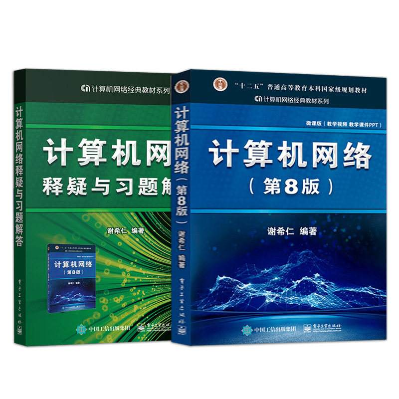
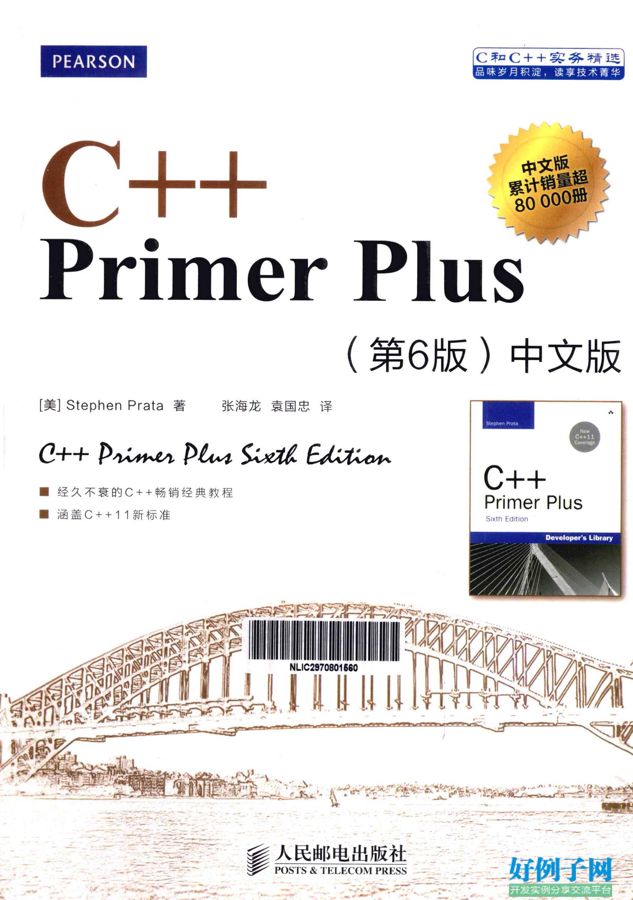
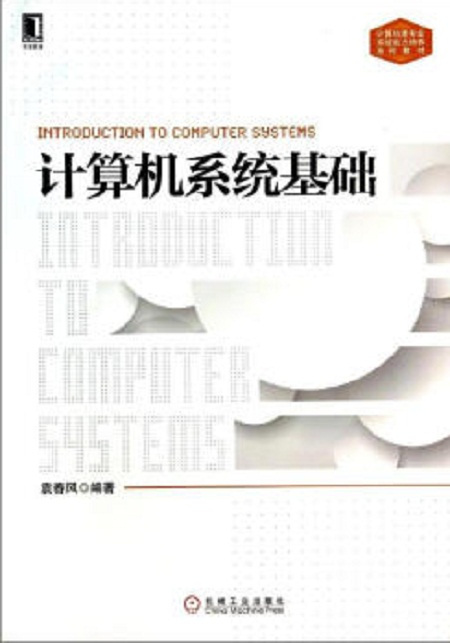

计算机网络
本书自1989年首次出版以来，曾多次修订版。在2006年本书通过了教育部的评审，被纳入普通高等教育"十一五”规划教材； 2008年出版的第5版获得了教育部2009年精品教材称号。2013年的第6版是"十二五”普通高等教育本科规划教材。2017年推出了第7版， 现在的第8版又在原有的基础上进行了较大的修订。全书分为9章，比较全面系统地介绍了计算机网络的发展和原理体系结构、 物理层、数据链路层（包括局域网）、网络层、运输层、应用层、网络安全、互联网上的音频/视频服务，以及无线网络和移动网络等内容。 各章均附有习题（附录A给出了部分习题的答案和提示）。全书课件及计算机网络基本概念的演示， 放在电子工业出版社悦学多媒体课程资源平台上 (http://yx.51zhy.cn/mtrcsRes/phei_cnetwork.jsp) ，供读者下载参考。本书的特点是概念准确、论述严谨、内容新颖、图文并茂，突出基本原理和基本概念的阐述，同时力图反映计算机网络的一些发展。
C++ Primer Puls

C++是在C语言基础上开发的一种集面向对象编程（OOP）、通用编程和传统的过程化编程于一体的编程语言。本书是根据2003年的ISO/ANSI
C++标准编写的，通过大量短小精悍的程序详细而全面地阐述了C++的基本概念和技术。
全书分17章和10个附录，分别介绍了C++程序的运行方式、基本数据类型、复合数据类型、循环和关系表达式、分支语句和逻辑操作符、
函数重载和函数模板、内存模型和名称空间、类的设计和使用、多态、虚函数、动态内存分配、继承、代码重用、友元、异常处理技术、
string类和标准模板库、输入/输出等内容。
《C++ Primer Plus中文版(第6版)》是根据2003年的ISO/ANSI
C++标准编写的，通过大量短小精悍的程序详细而全面地阐述了C++的基本概念和技术，并专辟一章介绍了C++11新增的功能。《C++ Primer
Plus中文版(第6版)》针对C++初学者，书中从C语言基础知识开始介绍，然后在此基础上详细阐述C++新增的特性，
因此不要求读者有C语言方面的背景知识。
作者：（美国）蒂芬•普拉达（Stephen Prata）
蒂芬•普拉达（Stephen
Prata），在美国加州肯特菲尔得的马林学院教授天文、物理和计算机科学。他毕业于加州理工学院，
在美国加州大学伯克利分校获得博士学位。他单独编写以及与他人合作编写的编程图书有十多本，其中包括C++Primer
Plus和C Primer Plus，而且后者获得了计算机出版协会1990年度最佳How—to计算机图书奖。
数据结构
一.《数据结构教程》
1996年华中科技大学出版社出版的图书
《数据结构教程》用精练、流畅的语言详述了数据结构的基本概念、基本思想、基本原理及实际背景。共分十章，内容包括：绪论， 线性表，栈和队列，特殊链表和特殊线性表，内、外排序，树，图，检索，文件。 书中以大量的例子来突出这样一个思想：数据结构是算法设计和描述的基础与工具，并采取了“对象描述、 关键一步和总体控制”的算法讲解模式等多项化解难点的创新作法，在教学中深受学生欢迎。另外， 《数据结构教程》采用实用的PASCAL语言作为数据结构和算法的描述工具，这将便于读者自学， 也有利于帮助读者在今后的实践中应用所学的知识。
二.《数据结构与算法分析》
2007年人民邮电出版社出版的图书
《数据结构与算法分析C++描述>（第3版）是数据结构和算法分析的经典教材，书中使用主流的程序设计语言C++作为具体的实现语言。 书的内容包括表、栈、队列、树、散列表、优先队列、排序、不相交集算法、图论算法、算法分析、算法设计、摊还分析、查找树算法、 k-d树和配对堆等。
三.《大话数据结构》
2011年清华大学出版社出版的图书
本书为超级畅销书《大话设计模式》作者程杰潜心三年推出的扛鼎之作！通篇以一种趣味方式来叙述， 大量引用了各种各样的生活知识来类比，并充分运用图形语言来体现抽象内容，对数据结构所涉及到的一些经典算法做到逐行分析、 多算法比较。与市场上的同类数据结构图书相比，本书内容趣味易读，算法讲解细致深刻，是一本非常适合自学的读物。
四.《数据结构（C++语言版）》
2012年清华大学出版社出版的图书
本书按照面向对象程序设计的思想，根据作者多年的教学积累，系统介绍各类数据结构的功能、表示和实现， 对比各类数据结构适用的应用环境；结合实际问题展示算法设计的一般性模式与方法、算法实现的主流技巧， 以及算法效率的评判依据和分析方法；以高度概括的体例为线索贯穿全书，并通过对比和类比揭示数据结构与算法的内在联系，帮助读者形成整体性认识。 书中穿插大量验证型、拓展型和反思型习题，以激发读者的求知欲，培养自学能力和独立思考习惯；近300幅插图结合简练的叙述，200多段代码配合详尽而简洁的注释，使深奥抽象的概念和过程得以具体化并便于理解和记忆。
计算机系统基础

《计算机系统基础》是2014年5月1日机械工业出版社出版的图书，作者是袁春风。
本书主要介绍与计算机系统相关的核心概念，解释这些概念如何相互关联并最终影响程序执行的结果和性能。本书共分8章，主要内容包括数据的表示和运算、程序的转换及机器级表示、程序的链接、程序的执行、存储器层次结构、虚拟存储器、异常控制流和I/O操作的实现等。本书内容详尽，反映现实，概念清楚，通俗易懂，实例丰富，并提供大量典型习题供读者练习。
本书可以作为计算机专业本科或大专院校学生计算机系统方面的基础性教材，也可以作为有关专业研究生或计算机技术人员的参考书
作者简介
袁春风，南京大学计算机科学与技术系教授。主要研究领域为大数据计算与并行处理技术、Web信息检索与文本挖掘技术、多媒体文档处理等。在相关领域承担科研项目30多项，发表论文60多篇，在Web信息处理方面获专利近10项，两次获江苏省科技进步二等奖，并获江苏省优秀软件一等奖。主持的“计算机组成原理”和“计算机组成与系统结构”课程被遴选为国家级精品课程、国家级精品资源共享课、江苏省精品课程、教育部-微软精品课程；所负责的“计算机组成与系统结构”课程网站获得江苏省优秀多媒体课件特等奖；独立编写普通高等教育“十一五”国家级规划教材《计算机组成与系统结构》以及《计算机组成与系统结构习题解答与教学指导》，该教材被遴选为江苏省精品教材；所承担的课程群被遴选为江苏省优秀课程群； 所负责的“计算机系统专业课程体系”被遴选为2013年教育部-英特尔公司产学合作专业综合改革项目；作为主要成员获2013年江苏省教学成果特等奖。